Contents
0. Summary
On one and the same host and Lanczos chain (2026-08-20 144b22 ns24 sectors, 12×12 coarse mesh × 22 spinor bands, relaxed defects, vacuum-aligned $\Delta V$, 4 symmetry sectors), this page compares four levels of scattering theory — {full $T$-matrix, Born} × {rest self-energy $\Sigma$ kept, dropped} — giving defect-limited mobilities for three defects × electrons/holes (all 12 cells of the matrix delivered), with K-valley zoom spectral functions and the vertex’s Wannier decay providing vector-level evidence for every conclusion. Three headlines: (i) Born is wrong by 1–2 orders of magnitude for deep wells (V$_\mathrm{S}$ holes 53×, strict second order 190×) — the same mechanism as the PdCoO$_2$ vacancy; (ii) $\Sigma$’s role flips with the defect: screening for V$_\mathrm{S}$ (19.9→13.3 eV), building a CBM resonance for O$_\mathrm{S}$ ($\Sigma$(CBM)=42 eV, 4× the bare vertex; dropping $\Sigma$ inflates $\mu_e$ by a spurious 72×), and near-cancellation for Se$_\mathrm{S}$ (3.5 vs 3.12 eV, 0.3–0.6 eV residual); (iii) of the four levels, only full $T$ + $\Sigma$ is simultaneously consistent for all three defects and both carriers. Carrier convention: the sheet density is fixed at $n=10^{10}$ cm$^{-2}$ and $E_F(T)$ is obtained by bisection on the pristine primitive-cell bands; $\mu\propto 1/n_d$.
1. Final summary table (300 K, $\eta\to0$ IBTE, cm²/(V·s))
A window ladder of NW={120,180,240} ($\eta=600/\mathrm{NW}$ meV) linearly extrapolated in $1/\mathrm{NW}$; (xx+yy)/2, isotropy <8%. full $T$+$\Sigma$ is the production reference.
| electrons $\mu_e$ | full $T$+$\Sigma$ | full $T$−$\Sigma$ | Born+$\Sigma$ | Born−$\Sigma$ |
|---|---|---|---|---|
| V$_\mathrm{S}$ (S vacancy) | 7 654 | 571 | 2 576 | 570 |
| O$_\mathrm{S}$ (O substitutional) | 1 330 | 95 721 | 828 | 6 275 |
| Se$_\mathrm{S}$ (Se substitutional) | 7 412 | 5 347 | 5 640 | 3 738 |
| holes $\mu_h$ | full $T$+$\Sigma$ | full $T$−$\Sigma$ | Born+$\Sigma$ | Born−$\Sigma$ |
|---|---|---|---|---|
| V$_\mathrm{S}$ | 15 243 | 1 482 | 287 | 80 |
| O$_\mathrm{S}$ | 2 413 | 5 698 | 913 | 335 |
| Se$_\mathrm{S}$ | 4 303 | 1 884 | 5 100 | 1 268 |
Temperature dependence of the reference level (IBTE, with SERTA in parentheses):
| T (K) | V$_\mathrm{S}$ $\mu_e$ | V$_\mathrm{S}$ $\mu_h$ | O$_\mathrm{S}$ $\mu_e$ | O$_\mathrm{S}$ $\mu_h$ | Se$_\mathrm{S}$ $\mu_e$ | Se$_\mathrm{S}$ $\mu_h$ |
|---|---|---|---|---|---|---|
| 100 | 8 159 (7 817) | 53 950 (45 286) | 818 (789) | 6 000 (5 569) | 7 313 (6 740) | 2 110 (1 862) |
| 200 | 7 659 (7 068) | 29 516 (23 193) | 1 112 (1 020) | 3 558 (3 217) | 7 116 (6 032) | 3 261 (1 895) |
| 300 | 7 654 (6 833) | 15 243 (11 770) | 1 330 (1 158) | 2 413 (2 178) | 7 412 (5 763) | 4 303 (1 948) |
| 400 | 7 735 (6 705) | 9 173 (7 068) | 1 518 (1 253) | 2 019 (1 806) | 7 914 (5 618) | 4 961 (2 009) |
The vertex correction (IBTE/SERTA) for Se$_\mathrm{S}$ holes reaches 2.2×: an isovalent weak perturbation → strong forward scattering, so SERTA badly overestimates the resistivity; $\mu_h$ rises with $T$ (once the thermal window climbs past the weak resonance near the VBM, the scattering rate falls). V$_\mathrm{S}$ and O$_\mathrm{S}$ have deep wells and near-isotropic scattering, so their corrections are only 1.1–1.3×. O$_\mathrm{S}$ is the only strong scatterer on both sides ($\mu_e$=1330, $\mu_h$=2413).
2. Ratios between approximation levels: $\Sigma$’s three roles
| defect | $\Sigma$’s role | vertex evidence (peak values, §4 decay table) | consequence (300 K IBTE) |
|---|---|---|---|
| V$_\mathrm{S}$ | screening (as in PdCoO$_2$) | bare 19.9 eV → $\tilde V$ 13.3 eV (−33%) | drop $\Sigma$: $\mu_e$ collapses 13×, $\mu_h$ 10×; Born/full (both keeping $\Sigma$) for holes 53×, strict second order 190× — multiple scattering saturates in a deep well |
| O$_\mathrm{S}$ | builds a CBM resonance / screens at the VBM (the same $\Sigma$ acting in opposite directions at the two band edges) | $\Sigma$(CBM)=42 eV (4× the bare value) pushes $\tilde V$(CBM) to 33 eV; $\tilde V$(VBM)=8.1 eV (< the bare 11.2) | drop $\Sigma$: $\mu_e$ inflates spuriously 72× (1 330→95 721) — the CBM resonance lives entirely in the rest space (the downfolded O-2p high-energy tail); $\mu_h$ instead rises 2.4× |
| Se$_\mathrm{S}$ | near-cancellation | $\Sigma\approx3.5$ eV cancels against the bare 3.12 eV, leaving 0.34–0.55 eV | with a weak vertex the Born series converges normally (Born/full ≤1.6×); “weak scattering” here does not mean a weak bare potential, but that the rest space cancels it |
2a. Why the smallest $\Sigma$ maps do not give the highest mobility: the on-shell audit (2026-08-25)
The $\Sigma$ colour maps of §3 suggest Se$_\mathrm{S}$ is the weakest scatterer on both sides, yet $\mu_h$(Se$_\mathrm{S}$) = 4303 is 3.5× below $\mu_h$(V$_\mathrm{S}$) = 15243. An audit of the mobility energy window (holes: VBM$-$0.36…VBM$+$0.04 eV; on-shell binning $\pm$2.5 meV; out-of-window thermal weight $\sim e^{-13}$) found the window blameless — the resolution is physical, and it is quantified by the on-shell, band-projected linewidths $\hbar\Gamma_\mathrm{qp}=2n_dN_k|\mathrm{Im}\,\tilde\Sigma_{nn}(k,\varepsilon_{kn})|$ in the 300 K transport windows (states along $\Gamma$-K-M; $R_c$=5a cluster = full box; $\eta$=2.5 meV):
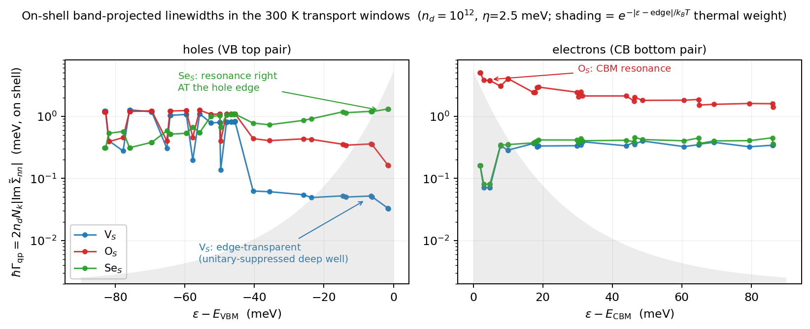
Holes: V$_\mathrm{S}$ is nearly transparent at the VBM edge ($\hbar\Gamma$ = 0.04–0.05 meV over the top 40 meV) — its huge vertex lives in the $-0.28$ eV deep resonance and the $+0.02$ eV gap state, both outside the thermal window, and the full-$T$ unitary suppression of the deep well (the same physics that makes Born wrong by 53×) removes the band-edge scattering. Se$_\mathrm{S}$'s only feature — the weak isovalent resonance — sits exactly at the VBM ($\hbar\Gamma$ = 1.25 meV at the edge, 30× V$_\mathrm{S}$), squarely on top of the $e^{-|\varepsilon-\mathrm{edge}|/k_BT}$ weight; thermally averaged, $\langle\Gamma\rangle$ = 0.32 / 0.57 / 1.03 meV for V$_\mathrm{S}$/O$_\mathrm{S}$/Se$_\mathrm{S}$, and the $\tau$-weighting ($\langle 1/\Gamma\rangle \ne 1/\langle\Gamma\rangle$, amplified by V$_\mathrm{S}$'s transparent edge) reproduces the SERTA ratio $\mu_h$(V$_\mathrm{S}$)/$\mu_h$(Se$_\mathrm{S}$) = 6.0. Electrons: O$_\mathrm{S}$'s CBM resonance puts $\hbar\Gamma$ = 3.95 meV right at the edge ($\langle\Gamma\rangle$ = 3.4 meV, 12× the others) — $\mu_e$ last; V$_\mathrm{S}$ and Se$_\mathrm{S}$ are nearly identical (0.25 vs 0.28 meV), matching $\mu_e$ 7654 vs 7412. Why the maps mislead: they show the 22-band trace on a log scale spanning to the 42 eV O$_\mathrm{S}$ peak — transport only sees the band-diagonal projection of the carrier's own band, on shell, within ~3$k_BT$ of the edge. Data rate_audit.npz, script diag/rate_audit.py (Anvil job 20136159).
The trace versus the transport channel, band by band. Decomposing $-\mathrm{Im}\,\Sigma_{nn}(K,\omega)$ over all 22 spinor bands at the two band edges (meV; $R_c$=5a, $\eta$=2.5 meV, $n_d=10^{12}$; the on-shell band is the one whose host energy equals $\omega$) shows how far the trace can drift from what a carrier actually feels:
| $\omega=E_\mathrm{CBM}$, $k$=K | V$_\mathrm{S}$ | O$_\mathrm{S}$ | Se$_\mathrm{S}$ |
|---|---|---|---|
| deep valence, bands 13–22 ($-5.4$…$-2.9$ eV) | 1.00 (77%) | 5.90 (56%) | 0.011 (8%) |
| top valence pair, bands 25–26 | 0.14 | 0.014 | 0.002 |
| conduction pair, bands 27–28 = on shell | 0.117 (9%) | 4.43 (42%) | 0.121 (86%) |
| upper conduction, bands 29–34 | 0.031 | 0.021 | 0.003 |
| trace (what the map shows) | 1.29 | 10.57 | 0.14 |
| $\omega=E_\mathrm{VBM}$, $k$=K | V$_\mathrm{S}$ | O$_\mathrm{S}$ | Se$_\mathrm{S}$ |
|---|---|---|---|
| band 26 = on shell | 0.016 (0.1%) | 0.082 (3.7%) | 0.657 (87%) |
| high conduction, bands 31–34 ($+3.4$…$+4.8$ eV) | 18.8 (95%) | 1.55 (70%) | 0.003 |
| everything else | 1.01 | 0.59 | 0.091 |
| trace (what the map shows) | 19.82 | 2.22 | 0.75 |
At the CBM, V$_\mathrm{S}$ and Se$_\mathrm{S}$ are the same scatterer to 3% in the channel that matters (0.117 vs 0.121 meV) while their traces differ 9×. At the VBM the trace ordering is exactly inverted relative to transport: the trace says V$_\mathrm{S}$ (19.8) $\gg$ O$_\mathrm{S}$ (2.2) $>$ Se$_\mathrm{S}$ (0.75), the on-shell channel says Se$_\mathrm{S}$ (0.657) $\gg$ O$_\mathrm{S}$ (0.082) $>$ V$_\mathrm{S}$ (0.016) — and it is the latter that reproduces $\mu_h$ = 15 243 / 2 413 / 4 303. V$_\mathrm{S}$'s enormous traces are carried by the bonding (deep valence, $-3$…$-5.5$ eV) and antibonding (high conduction, $+3.4$…$+4.8$ eV) Mo–S manifolds — exactly the orbitals a sulfur vacancy destroys — while the carrier at either edge is an in-plane Mo $d$ state that barely notices it. Se$_\mathrm{S}$, isovalent and leaving the bonding skeleton intact, puts 86–87% of its (small) trace into the band the carrier occupies. Script diag/band_decomp.py (Anvil job 20142145).
And the on-shell trace? A fair follow-up is that the tables above evaluate all 22 bands at one fixed $\omega$, so 21 of the 22 terms are off shell — what if instead each band is taken at its own quasiparticle energy, $\sum_n\Sigma_{nn}(k,E_{nk})$? Computing that at K (22 separate on-shell evaluations, $R_c$=5a) gives on-shell traces $\sum_n\Gamma_n$ = 20.39 (V$_\mathrm{S}$), 28.84 (O$_\mathrm{S}$), 11.38 meV (Se$_\mathrm{S}$), of which the carrier's own band holds 0.16% / 0.57% / 11.5% at the VBM and 0.79% / 17.6% / 1.4% at the CBM. So the on-shell trace fails to track transport too — it compresses a 40× spread in the VBM channel (Se$_\mathrm{S}$ 1.313 vs V$_\mathrm{S}$ 0.032 meV) into a 1.8× spread and puts V$_\mathrm{S}$ above Se$_\mathrm{S}$ — because it is still dominated by bands the carrier never occupies (V$_\mathrm{S}$: bands 15–16 at $-4.6$ eV, 2.3–2.7 meV, and 31–32 at $+3.4$ eV, 2.9–3.2 meV). Two remarks. First, this quantity is not the trace of any matrix: its terms are evaluated at 22 different arguments, so unlike $\mathrm{Tr}\,\Sigma(k,\omega)$ it has no basis-free meaning — it is well defined only in the band eigenbasis, which $H_k$ singles out. It becomes a genuine invariant only inside a degenerate manifold (the K-point conduction spin pair, the doubly degenerate $\Gamma$ valence maximum), where it is the trace of the decay-rate matrix and equals the sum of the eigenmode widths. Second, the physically natural band sum is over a constant-energy surface, not over bands at fixed $k$: $\sum_{nk}\Gamma_{nk}\delta(E-E_{nk})$ is the total out-scattering rate at energy $E$, tied by the optical theorem to the defect's total cross-section and by its energy integral to the Friedel sum rule — and that is exactly what the $\Gamma(\varepsilon)$ figures below plot. Useful validation: Se$_\mathrm{S}$'s band-26 on-shell width here, 1.313 meV, matches the independent 300×300 grid median at the edge, 1.334 meV. Script diag/onshell_trace.py (Anvil job 20142527).
Kubo versus Boltzmann. A fair objection is that the Kubo formula needs the complete trace, not one band diagonal. It does — but a different trace: $\sigma_{xx}=\frac{\pi\hbar e^2}{\Omega}\int d\omega\,(-\partial_\omega f)\,\mathrm{Tr}[v_x A(\omega)v_x A(\omega)]$ over the full matrix spectral function $A=\frac{i}{2\pi}(G^R-G^A)$, which carries two projections that $\mathrm{Tr}\,\Sigma$ has neither of: the velocity vertices weight each band pair by $|v_{mn}|^2$, and the spectral functions put the weight on shell — a band $\Delta E$ off shell enters with $A_{nn}(\omega)\simeq\Gamma/2\pi\Delta E^2$ instead of $2/\pi\Gamma$. For the bands carrying V$_\mathrm{S}$'s excess trace, $\Delta E$ = 3–7 eV against $\hbar\Gamma\sim0.3$ meV, so the leading interband-coherence correction is $O((\Gamma/\Delta E)^2)\sim10^{-8}$, and the 9–26× trace differences are invisible to any transport formula. Measured (KG bubble on the 300×300 grid, $\eta$=2.5 meV, four levels differing only in what is kept of $\Sigma$ and $v$; Anvil jobs 20149383/84/85). The implementation is validated by a level that keeps both $\Sigma$ and $v$ band-diagonal, which must analytically reproduce SERTA broadened to $\gamma=\Gamma/2+\eta$; it lands within 1.2–7.8% of that reference across the four cases below (the reference is a model Lorentzian built from the on-shell $\Gamma$, so it ignores the Re$\,\Sigma$ shift and the $\omega$-dependence of $\Sigma$ — the largest deviation is O$_\mathrm{S}$ electrons, precisely where the CBM resonance makes $\Sigma(\omega)$ vary fastest and the model is least applicable; that the interband and coherence ratios are identical across all four cases shows this is a limitation of the reference, not of the implementation). Every run gates on hermiticity and non-negative diagonal weight, and all pass (0.0, $+0.8\ldots1.3\times10^{-4}$).
| $\eta$=2.5 meV (cm²/Vs) | KG full | KG diag. $\Sigma$ | KG diag. $\Sigma$ and $v$ | model ref. | interband $v$ | coherence | SERTA $\tau=\hbar/\Gamma$ |
|---|---|---|---|---|---|---|---|
| V$_\mathrm{S}$ holes | 239.2 | 239.2 | 239.1 | 236.3 | 1.0005 | 1.0000 | 13 183 |
| V$_\mathrm{S}$ electrons | 418.5 | 418.6 | 418.5 | 431.3 | 1.0004 | 0.9998 | 6 701 |
| O$_\mathrm{S}$ holes | 223.3 | 223.2 | 223.1 | 229.1 | 1.0006 | 1.0005 | 2 830 |
| O$_\mathrm{S}$ electrons | 353.8 | 353.7 | 353.5 | 327.9 | 1.0005 | 1.0004 | 1 184 |
So everything the Boltzmann picture discards is worth about one part in a thousand here: across all four cases the off-diagonal self-energy contributes $\le$0.05% (coherence 0.9998–1.0005) and the interband velocity terms $\le$0.06% (1.0004–1.0006), both consistent with the analytic $O((\Gamma/\Delta E)^2)$ estimate. At the same broadening, Kubo–Greenwood and BTE are the same number to ~0.1%.
Why $\mu_\mathrm{KG}$ is far below $\mu_\mathrm{SERTA}$, and why that is not a physics statement. Against SERTA with $\tau=\hbar/\Gamma$ (13 183 and 2 830 cm²/Vs) the bubble gives ratios of 0.018 and 0.079 — but that gap is entirely the artificial broadening, not Kubo-versus-Boltzmann: in the bubble the Lorentzian half-width is $\Gamma/2+\eta$, and substituting $\tau=\hbar/(\Gamma+2\eta)$ into the SERTA sum reproduces the bubble to 2% (235.3 vs 239.2; 228.1 vs 223.3). The reason $\eta$ wins is the dilute limit: at $n_d=10^{12}$ cm$^{-2}$ the physical $\hbar\Gamma$ is only 0.03–4 meV, so 100% of the 300 K thermal weight, for every defect and both carriers, has $\Gamma<2\eta$. A meaningful bubble would need $\eta\lesssim0.1\,\Gamma\sim5\,\mu$eV with an $\omega$ grid finer still — and in that limit $A$ becomes $\delta$-like and the bubble reduces analytically to SERTA. In the dilute limit the two are therefore not competing numerical schemes; the latter is the analytic solution of the former, which is exactly why the production engine runs an NW ladder at $\eta=600/\mathrm{NW}$ meV and extrapolates linearly in $1/\mathrm{NW}$.
Record of a correction. An earlier revision of this page quoted a coherence correction of 0.12% and a large "interband velocity" enhancement (23×) from this same calculation. Both were wrong: the code built the spectral matrix as the element-wise imaginary part $A=-\mathrm{Im}\,G/\pi$ instead of the anti-Hermitian part $A=\frac{i}{2\pi}(G-G^\dagger)$. Those agree only for complex-symmetric $G$, which $(z-H-\Sigma)^{-1}$ is not when $\Sigma=cN_kT_{kk}$ is non-symmetric; the element-wise form is not Hermitian, admits negative spectral weight, and — decisively — does not transform covariantly under the rotation to the band basis, so taking a band-diagonal of it is meaningless. In a toy case it shifts $\mathrm{Tr}[vAvA]$ by a factor $-10$. It was caught only by adding the band-diagonal-$v$ validation level above, which came out exactly 2× off its analytic target. The fixed code now gates on hermiticity ($\le10^{-12}$) and non-negative diagonal weight at every run; both pass (0.0 and $+1.1\times10^{-4}$).
What the KG bubble cannot deliver here, and why. The absolute ratio $\mu_\mathrm{KG}/\mu_\mathrm{SERTA}$ is not reportable at a numerically accessible $\eta$, and the diagnosis is worth recording. In the KG spectral function the Lorentzian half-width is $\Gamma/2+\eta$, so the artificial broadening competes with the physical linewidth — and at $n_d=10^{12}$ cm$^{-2}$ the physical $\hbar\Gamma$ is only 0.03–4 meV, so at $\eta$=2.5 meV 100% of the thermal weight, for every defect and both carriers, satisfies $\Gamma<2\eta$. The consequences are visible in the numbers: the band-diagonal Lorentzian reference becomes nearly defect-independent (220 / 229 / 236 cm²/Vs for the three defects' holes, 328 / 428 / 431 for electrons), $\mu_\mathrm{KG}$ likewise (2592 / 2615 / 2845 and 1429 / 1761 / 1778), and their ratio is a universal 11.7 (holes) / 4.2 (electrons) across three scatterers as different as a 13 eV vacancy well, a CBM-resonant substitutional and an isovalent one. A number that does not distinguish those three is not measuring them — it is measuring $\eta$. A meaningful evaluation would need $\eta\lesssim0.1\,\Gamma\sim5\,\mu$eV and an $\omega$ grid finer still, some 200× the cost; but in that limit $A$ becomes $\delta$-like and the bubble reduces analytically to SERTA plus interband terms suppressed by $(\gamma/\Delta E)^2$. In the dilute limit KG-bubble and SERTA are therefore not two comparable numerical schemes — the latter is the analytic solution of the former, which is precisely why the production engine runs an NW ladder at $\eta=600/\mathrm{NW}$ meV and extrapolates linearly in $1/\mathrm{NW}$ instead of evaluating a bubble. (For completeness: the near-degenerate thermal-weight fraction is 15.9% for holes and 77.7% for electrons — opposite in ordering to the 11.7 / 4.2 ratios, so the interband enhancement in the $\eta$-dominated regime is not simply a degeneracy effect, and no mechanism is assigned to it here.) Scripts diag/kg_bubble.py, data kg_bubble_*.npz / kg_states_*.npz. The one place the two genuinely part company in this material is the near-degenerate conduction spin pair (3 meV splitting versus $\hbar\Gamma$ = 0.3 meV → ~1%, further suppressed because the pair are Kramers partners with small $v_{12}$); Kubo would also be mandatory in regimes this system never enters here — Ioffe–Regel breakdown ($\hbar\Gamma\ll$ the 26 meV thermal window and eV bandwidths, so $k_F\ell\gg1$) or defect-band hopping at much higher $n_d$. Note the converse caveat as well: the bare Kubo–Greenwood bubble carries no vertex correction, so it is the Kubo analogue of SERTA, not of IBTE; matching the IBTE numbers requires the ladder-resummed Kubo, which is diagrammatically the same object as the BTE collision integral.
The same rates resolved on a full 300×300 $k$ grid (11 304 hole and 5 120 electron states within 150 meV of their edges; every point is one grid state — the two spin-split branches resolve as separate arcs; right axis $1/\tau$):
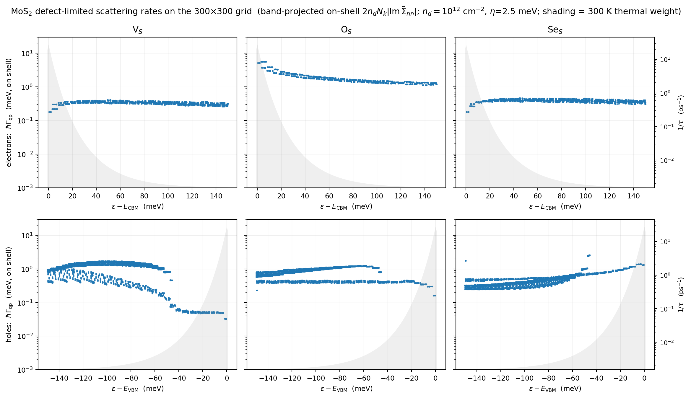
The grid resolves what a high-symmetry line cannot: the hole side is a $\Gamma$-pocket-versus-K-valley story. The doubly degenerate $\Gamma$ valence maximum sits at $E_\mathrm{VBM}-45.6$ meV, and below it the $\Gamma$ pocket dominates the phase space (the state count per 5 meV bin falls 590 → 72, a factor 6, on crossing it). In that deeper region all three defects scatter comparably ($\hbar\Gamma\approx1$–1.5 meV). Above it only the K/K′ valleys survive — and there the three separate by a factor of 27: V$_\mathrm{S}$ collapses to 0.049 meV (a 26× step down at the $\Gamma$-pocket edge — the vacancy's $p_z$-heavy dangling-bond potential couples strongly to the out-of-plane $\Gamma$ states but barely to the in-plane K-valley valence band), O$_\mathrm{S}$ falls only 3× to 0.17–0.40 meV, and Se$_\mathrm{S}$ instead rises toward the edge to 1.334 meV because its isovalent resonance is pinned at the VBM. Since the 300 K thermal weight (shading) lies almost entirely within ~26 meV of the edge, transport samples exclusively the K/K′ region, and V$_\mathrm{S}$'s transparency there is what produces $\mu_h$ = 15 243. On the electron side V$_\mathrm{S}$ (0.289 meV) and Se$_\mathrm{S}$ (0.306 meV) are flat and nearly identical across the whole window — matching $\mu_e$ = 7654 vs 7412 — while O$_\mathrm{S}$'s CBM resonance starts at 3.886 meV and decays to 1.3 meV at $+150$ meV. The SERTA ordering at 300 K (V$_\mathrm{S}$ 11 770 $\gg$ O$_\mathrm{S}$ 2 178 $\gtrsim$ Se$_\mathrm{S}$ 1 948) follows these edge rates directly; the IBTE vertex correction — 2.2× for Se$_\mathrm{S}$'s forward-peaked isovalent scattering versus 1.1× for O$_\mathrm{S}$ — is then what lifts Se$_\mathrm{S}$ (4 303) back above O$_\mathrm{S}$ (2 413) in the final table. Data rate_grid_{VS,OS,SES}.npz, scripts diag/rate_grid.py / plot_rate_grid.py (Anvil jobs 20140780/81/82; the Se$_\mathrm{S}$ hole side was computed twice on different nodes and agreed to 1.334 meV).
2b. The three rates: quasiparticle, momentum relaxation, full IBTE (2026-08-25)
The same 300×300 grid, now carrying the whole ladder the mobility engine solves internally, state by state: the quasiparticle rate $1/\tau_\mathrm{qp}=\Gamma_\mathrm{qp}/\hbar$ (what SERTA uses), the momentum-relaxation rate $1/\tau_\mathrm{tr}=\sum_{s'}P_{ss'}(1-\cos\theta_{ss'})$, and the full linearized-BTE rate $1/\tau_\mathrm{IBTE}=|v|^2/(F\!\cdot\!v)$ with $F=\tau_\mathrm{qp}v+\tau_\mathrm{qp}PF$. The kernel $P_{ss'}=\frac{2\pi}{\hbar}c\frac{N_k^2}{N_\mathrm{grid}^2}|T_{ss'}|^2L_\eta(\varepsilon_s-\varepsilon_{s'})$ is built from the same $R_c$=5a image-free $T$, with the optical theorem $\sum_{s'}P_{ss'}=\Gamma_s/\hbar$ enforced (median residual 0.2–0.5%).
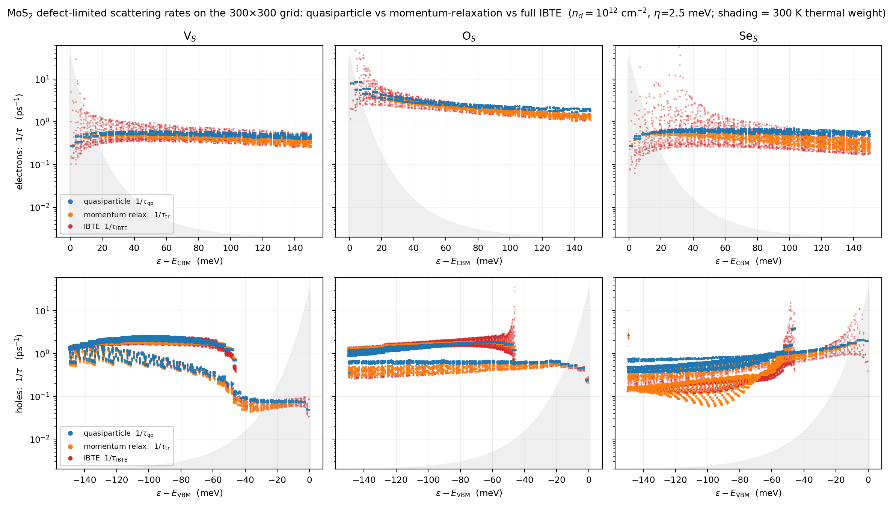
This is the vertex correction resolved state by state. For Se$_\mathrm{S}$ holes the three separate strongly below the $\Gamma$-pocket edge — window medians 0.740 → 0.300 → 0.247 ps$^{-1}$, a factor 3 — the signature of an isovalent weak perturbation scattering into small angles, where $(1-\cos\theta)$ removes most of the quasiparticle rate. V$_\mathrm{S}$ and O$_\mathrm{S}$ stay nearly degenerate (1.844/1.750/1.710 and 1.394/1.561/1.482 ps$^{-1}$): deep wells scatter near-isotropically, and O$_\mathrm{S}$ holes are even slightly backscattering-dominant ($1/\tau_\mathrm{tr}>1/\tau_\mathrm{qp}$). At the band edges themselves all three converge for every defect, because there only K/K′ intervalley processes survive and those carry $\langle\cos\theta\rangle\approx0$ — no forward-scattering suppression is available. The wide spread of the IBTE points is physical, not numerical: $\tau_\mathrm{IBTE}$ is direction-dependent around the trigonally warped constant-energy contours, whereas $\tau_\mathrm{qp}$ and $\tau_\mathrm{tr}$ are scalars per state.
Cross-check against the production engine. Integrating these per-state lifetimes into mobilities on the spot, $\mu_X\propto\sum\tau_X v^2(-\partial f/\partial\varepsilon)$, reproduces the IBTE/SERTA enhancements of §1 (which came from the independent NW-ladder engine with $\eta\to0$ extrapolation):
| $\mu_\mathrm{IBTE}/\mu_\mathrm{SERTA}$ | V$_\mathrm{S}$ h | V$_\mathrm{S}$ e | O$_\mathrm{S}$ h | O$_\mathrm{S}$ e | Se$_\mathrm{S}$ h | Se$_\mathrm{S}$ e |
|---|---|---|---|---|---|---|
| from these per-state $\tau$ ($\eta$=2.5 meV, 300²) | 1.22 | 1.10 | 1.23 | 1.13 | 1.81 | 1.27 |
| production engine ($\eta\to0$, NW ladder) | 1.30 | 1.12 | 1.11 | 1.15 | 2.21 | 1.29 |
The residual differences are the expected ones — fixed $\eta$ = 2.5 meV here versus the $1/\mathrm{NW}$ extrapolation there, a different transport grid, and $v_x^2\to|v|^2/2$ in this quick integration — but the physics is reproduced independently, including Se$_\mathrm{S}$'s outlier vertex correction. Data rate_ibte_{VS,OS,SES}.npz, scripts diag/rate_grid_ibte.py / plot_rate_ibte.py (Anvil jobs 20142491/92/93). Implementation note: once the optical theorem is enforced exactly, $\tau_\mathrm{qp}P$ has unit row sums, so the per-shell constant is an eigenvector with eigenvalue 1 and $(1-\tau_\mathrm{qp}P)$ is singular; the BTE must be solved in the deflated subspace ($F=\tau_\mathrm{qp}v+\Pi\,\tau_\mathrm{qp}P\,\Pi F$, the same fixed point as the engine's projected iteration). Solving the raw singular system and deflating afterwards leaves the shell means right but the per-state values noise-dominated — the residual is the tell (4×10$^{-16}$ deflated versus 5×10$^{-4}$ raw).
Compared against the 2×2 conclusions for PdCoO$_2$ ((Pd-vac 3D): qualitatively the same — Born is wrong by 1–2 orders of magnitude for deep wells and $\Sigma$ cannot be dropped; but the semiconductor band edges let both of $\Sigma$’s mechanisms (screening vs building a resonance) play out in the same material, flipping direction with the defect and the carrier. Only full $T$ + $\Sigma$ is consistent across the board.
3. K-valley zoom spectral functions $A(k,\omega)$
In the soc-zoom production convention (recomputed 2026-08-24; the recommended version to cite): the KZOOM path $K-0.30\,\overline{\Gamma K}\to K\to K+0.45\,\overline{KM}$ (721 points), energy windows vz $E-E_\mathrm{VBM}\in[-0.45,+0.35]$ and kz $[1.40,2.20]$ (200 $\omega$ each), $\eta=5$ meV (the continued fraction is evaluated at $z+i\eta$ — otherwise a finite chain’s Ritz poles are zero-width needles), $n_d=10^{12}$ cm$^{-2}$, and $A(k,\omega)=-\pi^{-1}\mathrm{Im\,Tr}\big[(\omega+i\eta-H_k-n_d N_k T_{kk}(\omega))^{-1}\big]$ taking the full 22-orbital trace — in-gap defect flat bands appear as genuine poles of the resolvent. The colour scale is logarithmic (LogNorm, floor $2\times10^{-4}\,v_\mathrm{max}$).
Reading the figures: the CB window’s SOC doublet (~3 meV splitting at K, opening along $K\to M$) and the VB window’s 149 meV spin splitting correspond one to one with SOC zooms ; V$_\mathrm{S}$’s VB window has a faint in-gap flat band at $\approx+0.02$ eV (the honest brightness of the dilute limit — the $n_d T$ spectral weight is simply small); and O$_\mathrm{S}$ has the strongest broadening at the CB valley bottom.
The electron–defect self-energy $\Sigma^{ed}(k,\omega)=n_d N_k T_{kk}(\omega)$ (same path and energy windows; top row Re Tr $\Sigma$ on a diverging colour scale, bottom row $-$Im Tr $\Sigma$ on a logarithmic one):
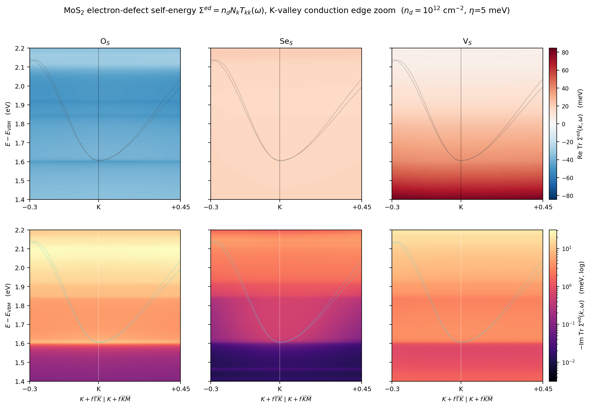
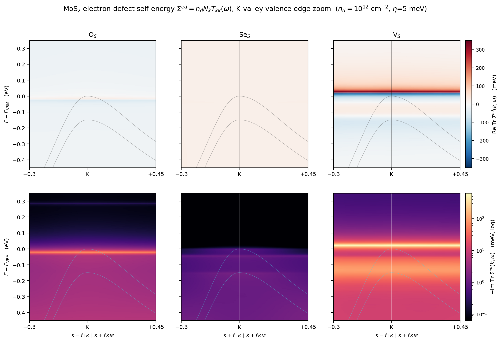
Reading the maps: $T(k,k)$ is nearly flat along the path (the signature of a short-ranged point-defect potential). In the VB window, V$_\mathrm{S}$’s shallow $+0.02$ eV in-gap state is a textbook resonance (a bright $-$Im line and the two level-repulsion lobes of Re crossing zero and changing sign, with Re peaking at $\pm350$ meV); O$_\mathrm{S}$ has a weak resonance line below the VBM; and Se$_\mathrm{S}$ shows almost no feature (isovalent). In the CB window, O$_\mathrm{S}$’s Re$\,\Sigma<0$ level attraction (its CBM resonance pulling the band edge down from above) switches on together with $-$Im at the band edge, corresponding directly to O$_\mathrm{S}$ being last in the $\mu_e$ table. These are assembled directly from the stored raw $T_{nn}$, and $n_d$ rescales linearly.
Comparison against the older figures on the soc-zoom page (checked): rendered by the same code, the two datasets’ $A(k,\omega)$ differ by a median of 5.2% point by point, the continuum Tr $\Sigma$ ratio is 0.9–1.25, and the resonances correspond one to one (−257/−120/+24 ↔ −253/−128/+20 meV) — normalization and physics agree (the old figure’s colour-scale values were actually states/Ry, a labelling discrepancy of 13.6×). The thin flat band at $+0.19$ eV in the old figure is a Ritz artifact of an over-short svdA chain (NS=16) — a finite chain discretizes the dressed rest continuum into real-axis Ritz poles, and when the chain is too short an unconverged isolated pole survives; this page’s n_lancz=24 production chain is converged, and that feature is correctly absent. The differences in the shallow in-gap state’s position and strength (+0.012–0.020 vs +0.024/0.03) belong to the same chain-generation refinement.
3a. The O$_\mathrm{S}$ near-VBM "defect flat band": exact-array arbitration (2026-08-24)
At the same $n_d=10^{12}$ cm$^{-2}$, the legacy soc-zoom page shows a prominent flat line at $-20$ meV in the O$_\mathrm{S}$ hole window, while the new maps on this page do not. A layer-by-layer audit found: the $A$-assembly formulas of the two generations are identical; no transposition between chain generations (sector vs svdA agree element-wise to 2%, vs 1.8 for the transpose); the support-basis projection residual at the resonance is $3\times10^{-6}$; and re-solving T in the full 3168-dim coarse basis with the legacy-style fine-grid real-space host $g(\Delta R)$ reproduces this page's production numbers exactly ($A=0.0227$ at path idx 100). The two T generations were then put before a zero-approximation referee: at $c=1/144$ (one defect per 12×12 supercell) the chain data itself constitutes a periodic array, and the resolvent of $H_\mathrm{eff}=\mathrm{diag}(\varepsilon)+(V_{AA}+\Sigma(\omega))/N_k$ yields the exact $A(k,\omega)$ — no T-matrix equation involved.
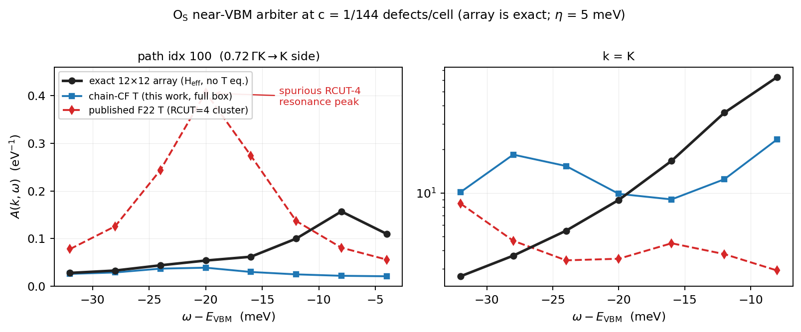
Verdict (path idx 100, $\omega-E_\mathrm{VBM}=-20$ meV, $c=1/144$): exact array $A=0.054$; this work's T gives $0.039$ (28% low, tracking the array over the whole $-32\ldots-20$ meV stretch); the published F22 T (RCUT=4 cluster) gives $\mathbf{0.407}$ — a 7.5× spurious resonance peak; the visible flat line in the legacy figure is this truncation artifact. The exact array has no discrete peak at $-20$ meV at this $k$, only a monotonic rise toward the band edge. Same verdict at $k=K$ (right panel, log scale): this work follows the array's band-edge rise while F22 sits flat at 3–4, missing it entirely. Mechanism: the shallow O$_\mathrm{S}$ resonance (binding ~21 meV) has a Bohr diameter of ~12 cells; the 61-cell cluster truncates both the vertex and the host $g$, squeezing the state and inflating its top-valence-band coupling $|\langle K,v|V|d\rangle|^2$ by ~90× (band-projected $-\mathrm{Im}\,\tilde\Sigma$: 17–18 vs 0.2 meV) while leaving the trace nearly unchanged (79.7 vs 72.6 meV) — the trace is invariant under per-$k$ unitary conjugation, which is exactly why "$\Sigma$ traces agree yet $A$ differs" was possible. Diagonalizing $H_\mathrm{eff}$ confirms the $-21.5$ meV localized state is real (a Kramers pair, 67%+31% top-valence-pair composition, participation ratio ≈ 4), but its dilute-limit spectral footprint is intrinsically faint: invisibility in $A$ at $n_d=10^{12}$ is the correct physics (it is visible in the $\Sigma$ maps); for enhanced visibility see the $n_d=10^{13}$ companions and deep-saturation renders below.
$n_d=10^{13}$ cm$^{-2}$ companions (same stored $T(k,k;\omega)$ — $\Sigma^{ed}$ is strictly linear in $n_d$ — assembled with 10× the defect concentration; the independent-scatterer approximation is beginning to be strained at this density, so read these as visibility aids, not production spectra). Now the honest weak features surface on the standard log scale: the O$_\mathrm{S}$ level at $\approx-0.02$ eV runs as a thin line across the whole valence window, V$_\mathrm{S}$'s $+0.02$ eV in-gap state brightens, Se$_\mathrm{S}$ keeps only a barely-visible near-VBM trace, and on the conduction side O$_\mathrm{S}$'s CBM spectral weight at K is visibly pulled down into the gap:
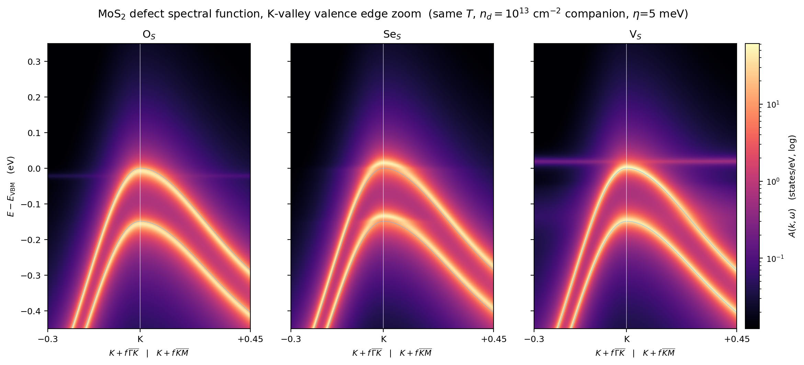
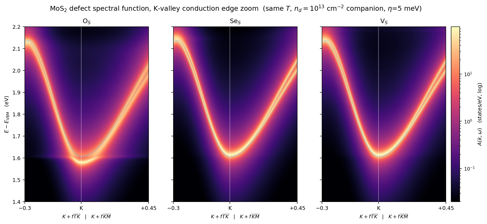
Deep-saturation renders at the production $n_d=10^{12}$ (top row: log scale saturating the band cores at 3 states/eV; bottom row: $|A-A_\mathrm{host}|$, the defect-induced weight — the most sensitive linear-response view of where the defect deposits spectral weight at the honest concentration):
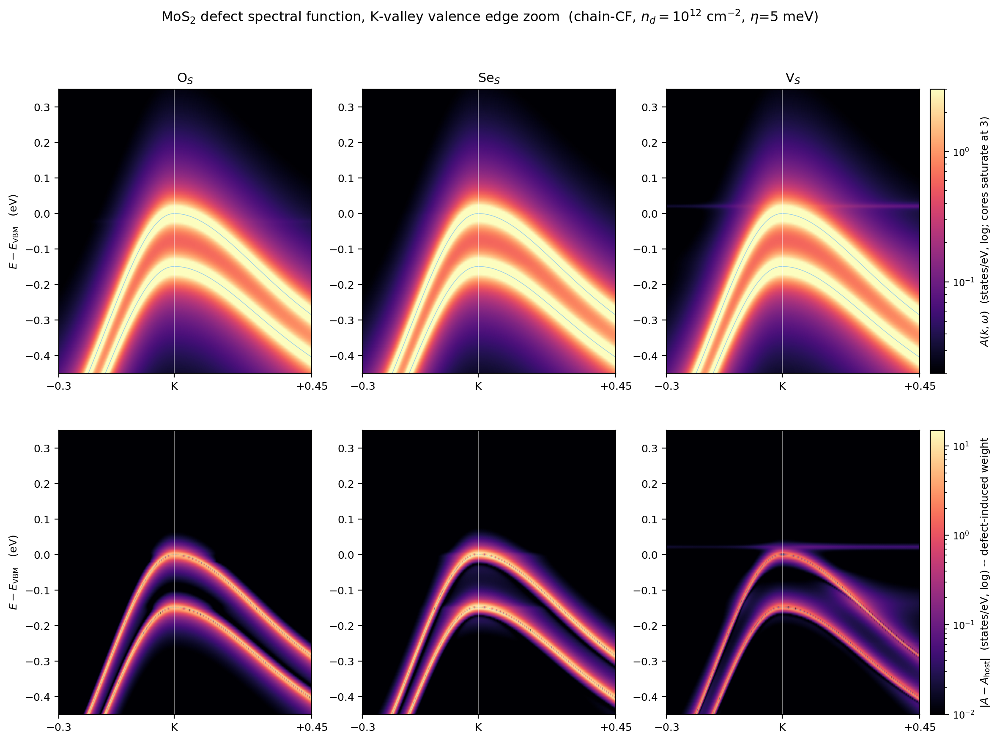
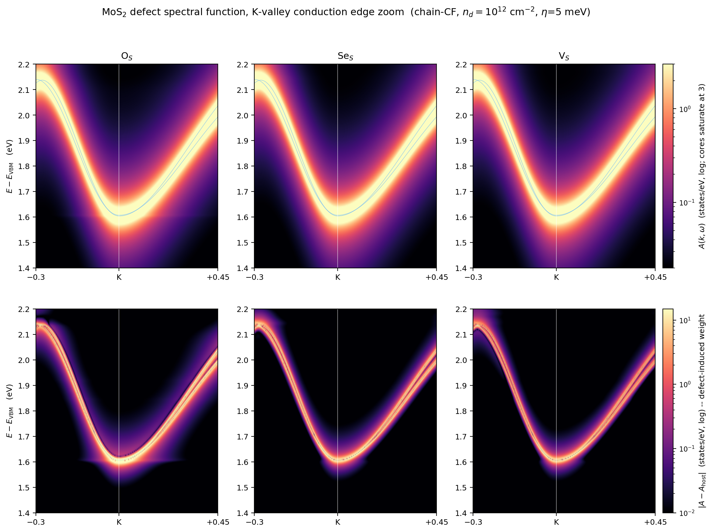
3a-bis. Image-free real-space construction ($R_c=3a$, 2026-08-25)
The arbitration above validates the full-box T against the periodic array — but the array itself contains 12×12 periodic-image physics, and the dilute limit calls for an image-free object. Following the user-specified construction, the chain vertex $\tilde V(\omega)=(V_{AA}+\Sigma(\omega))\mathrm{Ry}/N_k$ is Fourier-transformed to the Wannier $(R,R')$ pair representation, truncated to defect-centered cluster sites $|R-R_\mathrm{def}|\le R_c\!=\!3a$ (37 cells; kept matrix elements sit $\ge 9a$ from the nearest image defect), and the T equation is solved with the exact isolated-crystal real-space host $g(\Delta R;\omega)$ from a 480² fine sweep — no BvK torus anywhere downstream of the vertex data. $T(k,k)$ then follows by Bloch sums at arbitrary $k$ (true Wannier interpolation; the window must be centered on the defect cell, auto-detected as $[3,3]$). Verification gates all pass for all three defects: fold identity $\sim10^{-16}$; binned-vs-exact host $g$ $\le1.4\times10^{-3}$; and the untruncated box reproduces the stored k-space full-box $T$ ($\mathrm{Tr}\,T$ rel. dev. $6\times10^{-3}$ / $2\times10^{-3}$ / $3\times10^{-5}$ for O$_\mathrm{S}$/V$_\mathrm{S}$/Se$_\mathrm{S}$).
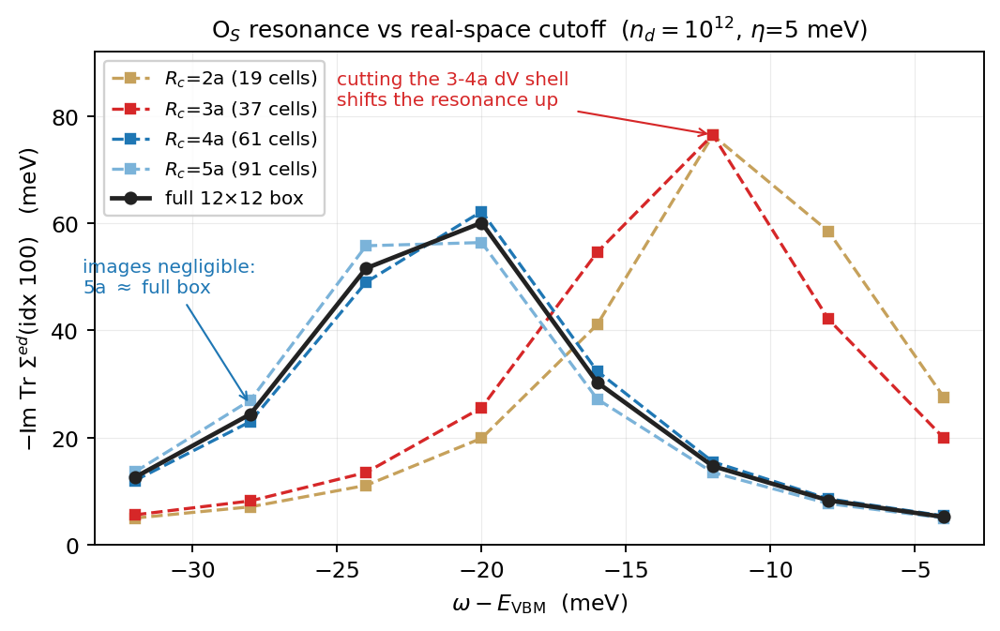
What the $R_c$ scan shows (O$_\mathrm{S}$, $-\mathrm{Im\,Tr}\,\Sigma^{ed}$ at path idx 100): periodic images are negligible for the spectral function — $R_c=5a$ coincides with the full box. What moves the shallow O$_\mathrm{S}$ resonance is the real $\Delta V$ in the 3–4$a$ shell ($\sim$20–30 meV, comparable to the $\sim$20 meV binding): cutting it at $R_c=3a$ shifts the resonance from $-20$ to $-12$ meV and sharpens it (peak 77 vs 60 meV), while $R_c=4$–$5a$ already sits on the full-box result. So for this state (Bohr diameter $\sim$12 cells) "potential complete + image free" is best served by $R_c=4$–$5a$; the $R_c=3a$ production below follows the specified convention, with this $\pm$8 meV positional systematic quantified. Crucially, $A(k,\omega)$ at $n_d=10^{12}$ stays faint at every $R_c$ (0.019–0.023 at idx 100) — the absence of a visible O$_\mathrm{S}$ line at the production concentration is cutoff-robust, and the legacy figure's bright line is reproduced at no cutoff.
$R_c=3a$ production maps — $A(k,\omega)$ at $n_d=10^{12}$, the $n_d=10^{13}$ companion (O$_\mathrm{S}$ level line now at $\approx-12$ meV), and the $\Sigma^{ed}$ maps (O$_\mathrm{S}$: $-$Im line hugging the VBM edge; V$_\mathrm{S}$: the $+0.02$ eV in-gap resonance with its Re level-repulsion doublet; Se$_\mathrm{S}$: near-featureless):
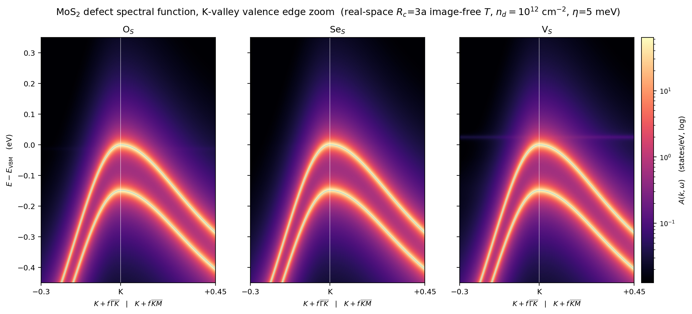
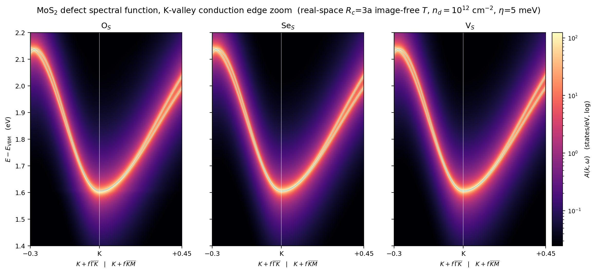
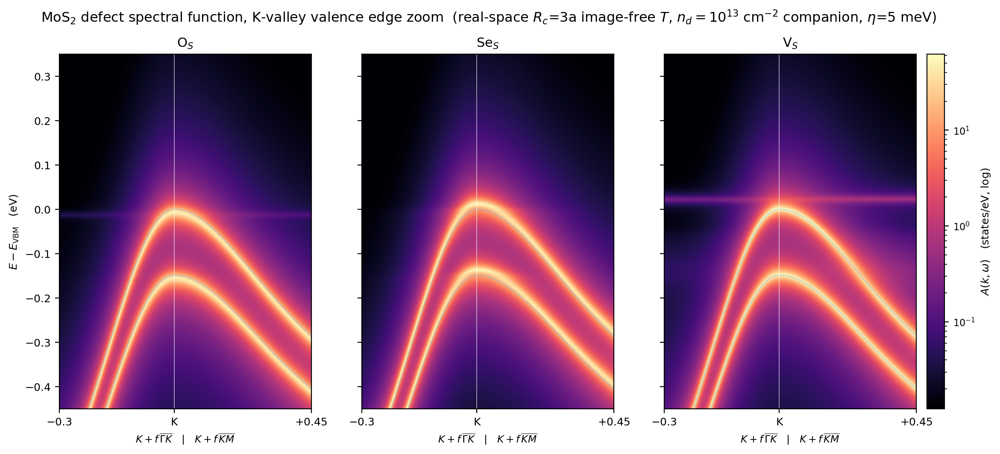
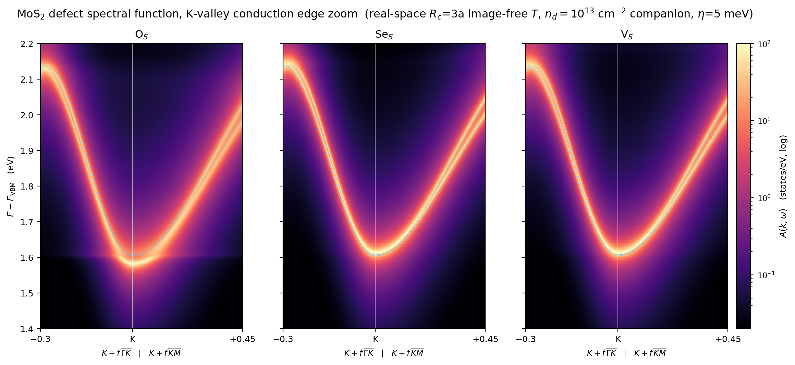
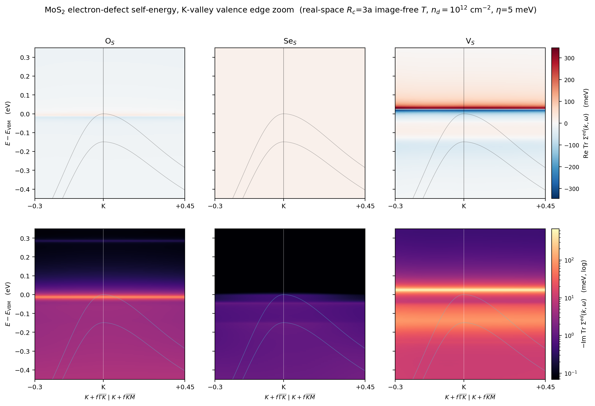
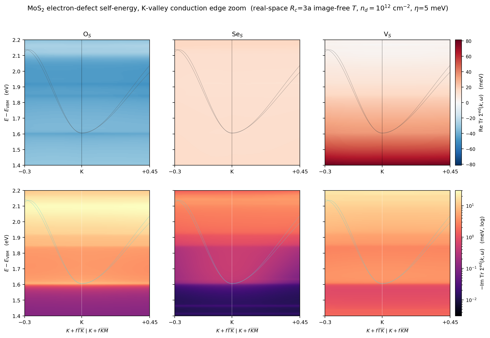
Full-path $\Gamma$-K-M-$\Gamma$, whole-gap window (same $R_c=3a$ construction; 600 arclength-proportional $k$ points, 430 $\omega$ over $E-E_\mathrm{VBM}\in[-0.25,+1.85]$ eV; $n_d=10^{12}$ and the $10^{13}$ companion). The one-figure summary of each defect's in-gap electronic structure: V$_\mathrm{S}$ carries its deep in-gap $e$-doublet as two flat lines at $\approx+1.10/+1.17$ eV across the whole zone — quantitatively consistent with the four-route-validated $+1.16$–$1.19$ eV of the earlier explicit-T-matrix campaign — plus the shallow $+0.02$ eV line above the VBM; O$_\mathrm{S}$ has no deep in-gap level (its resonance sits at/above the CBM, seen as the band-bottom pull-down at K), only the $\approx-0.02$ eV line below the VBM; Se$_\mathrm{S}$ shows just a faint near-VBM trace — the isovalent defect leaves the gap empty:
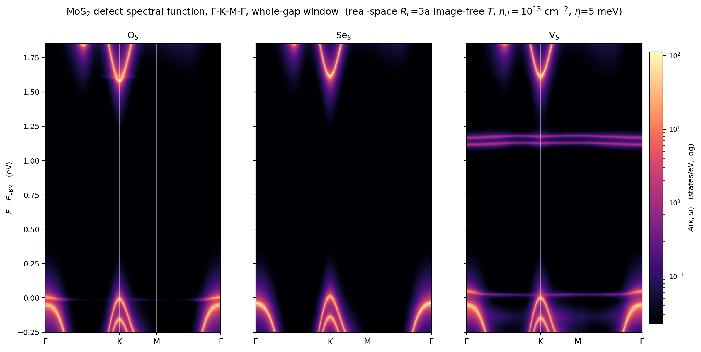
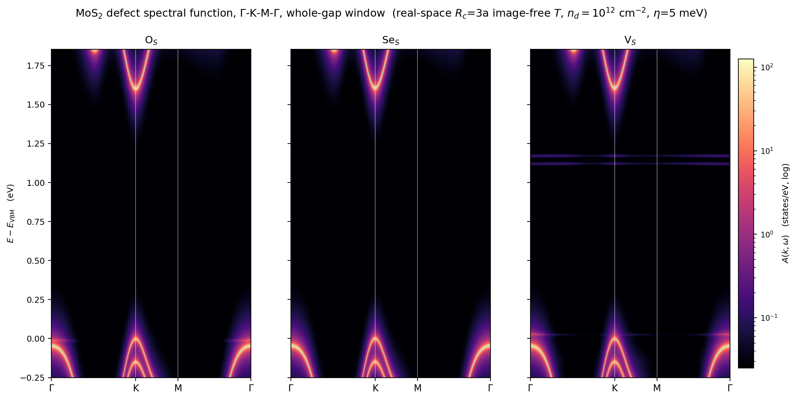
3b. The earlier narrow-window version (per-band diagonal $T_{nn}$, archived)
Path $0.70\overline{\Gamma K}\to K\to K+0.45\overline{KM}$ (261 points), $\omega$-resolved vertex (continued fraction binned at 5 meV), internal $\eta=2$ meV, host $g_S$ spectrally binned on a dense 480² mesh; display concentration $c=1/144$ (one defect per BvK cell), $g_0$ broadening 4 meV. $A(k,\omega)=-\pi^{-1}\,\mathrm{Im}\sum_n\big[g_{0n}+g_{0n}^2\,c\,N_k\,T_{nn}(k,\omega)\big]$; the raw $T_{nn}(k,\omega)$ (independent of $c$) is stored, so broadening and concentration can be freely reselected at render time.
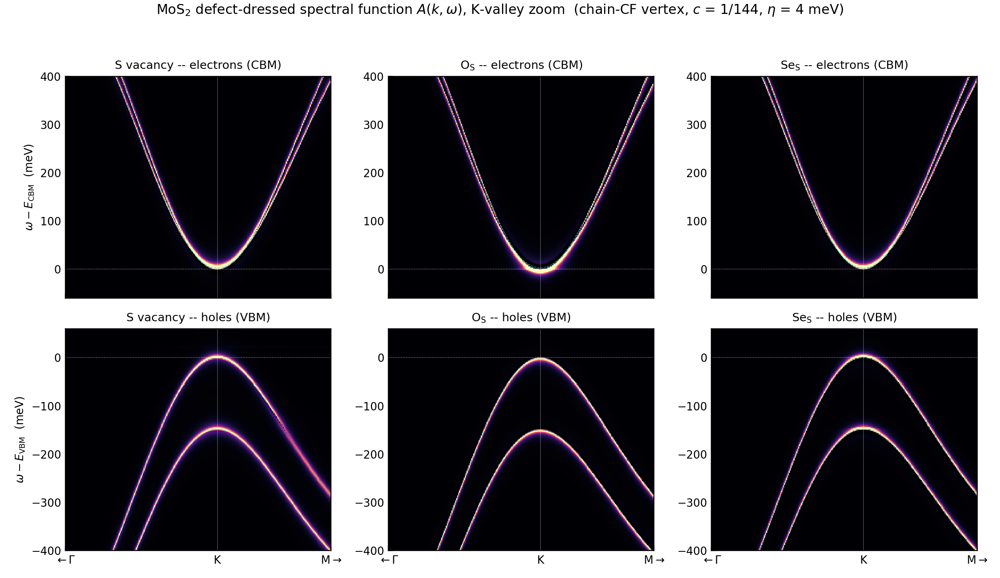
Reading the figure: the top row is electrons (CBM), the bottom row holes (VBM). The K-valley valence spin splitting of ~150 meV into two parabolas and the ~3 meV CB splitting agree with SOC zooms . The one strong anomaly is in the O$_\mathrm{S}$ electron panel: $\Sigma$ pulls the CBM spectral weight at K into the gap (the band bottom sinks and broadens) — precisely the microscopic origin of O$_\mathrm{S}$ being last in the $\mu_e$ table, and the same effect as the Re$\,\Sigma<0$ level attraction in soc-zoom §1.
QP bands ($\varepsilon+\mathrm{Re}\,\Sigma$ on shell, coloured by $|\mathrm{Im}\,\Sigma|$, $c=1/144$):
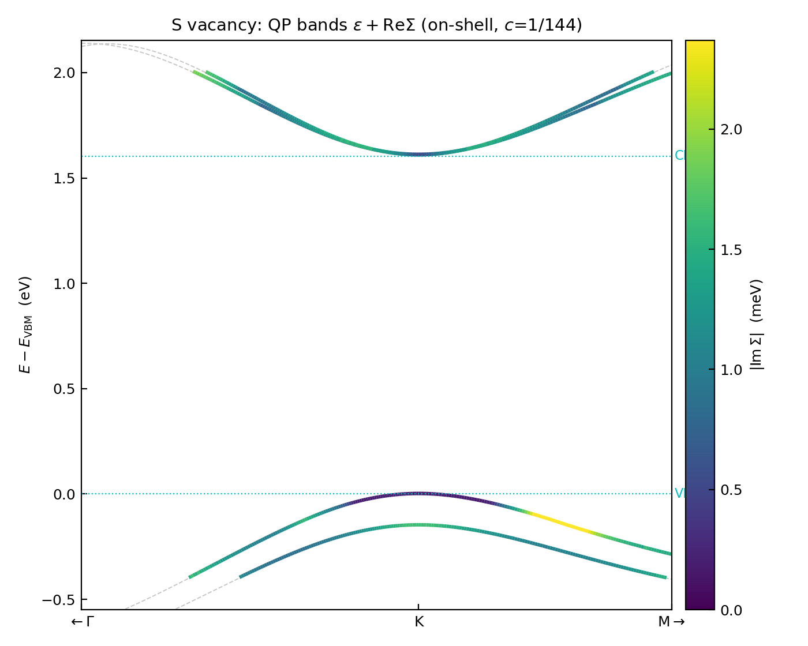
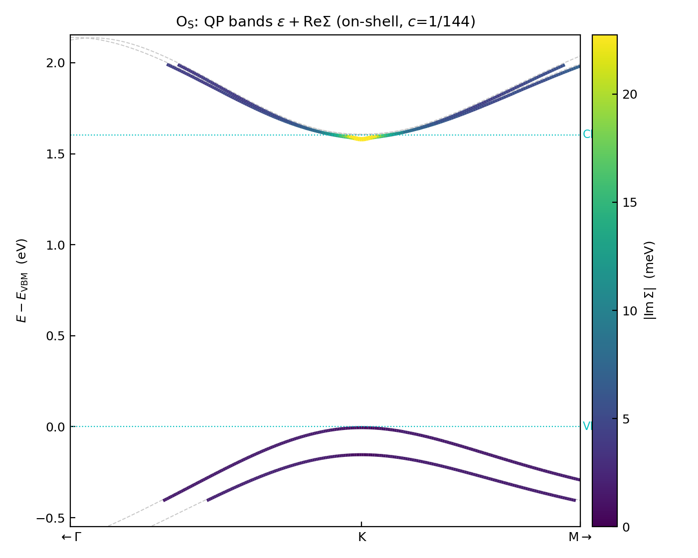
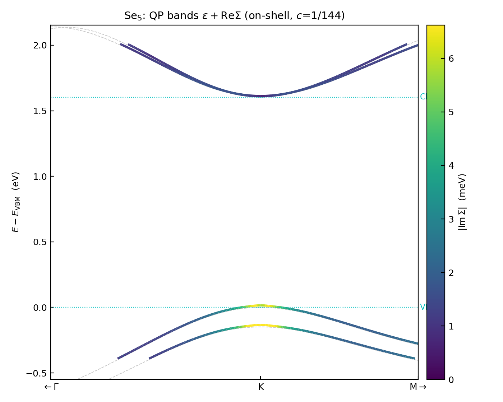
V$_\mathrm{S}$ has $|\mathrm{Im}\,\Sigma|\le4$ meV along the whole path (weak band-edge scattering → the highest $\mu_h$); O$_\mathrm{S}$ peaks at ~22 meV at the CBM valley bottom with its QP band bending down through the bare CBM, while its valence band barely moves (≲2 meV) — an electron/hole asymmetry quantitatively consistent with §1; and Se$_\mathrm{S}$ is at the meV level on both sides.
4. Wannier decay validation (edmat and the downfolded matrices)
A fingerprint test of gauge consistency and locality (this is exactly where July’s SV gauge contamination showed itself): rotate the active block into the Wannier $(R,R')$ representation and bin into shells centred on the defect cell (the argmax of the cell-diagonal map, not the origin).The gE gate: the chain’s $V_{AA}$ against the bands 13–34 slice of the original 40-band edmat is bit-identical (max|d| = 0.0) for all three defects — incidentally pinning down the F-order convention of the ver 20260809 .bin (no legacy transpose).
| peak (eV) | bare $V_{AA}$ | $\tilde V$(VBM) | $\tilde V$(CBM) | $\Sigma$(CBM) | peak/floor |
|---|---|---|---|---|---|
| V$_\mathrm{S}$ | 19.85 | 13.27 | 12.79 | 11.8 | ~4–5×10⁵ |
| O$_\mathrm{S}$ | 11.22 | 8.10 | 33.23 | 42.3 | ~2–13×10⁵ |
| Se$_\mathrm{S}$ | 3.12 | 0.34 | 0.55 | 3.5 | 10⁴ (bare 6×10⁴) |
All 15 objects (bare / $\tilde V$ at two anchors / $\Sigma$ at two anchors × 3 defects) are LOCALIZED: the defect cell is consistently $R=[-3,-3]$, and the cell-diagonal elements decay by 4–7 orders of magnitude. The common ~20–30 meV plateau at $d\approx3.7$–$4.7$ cells (13–16 Å) is independent of defect species — it is the true far-field level of the vacuum-aligned $\Delta V$ (measured at ±20–30 meV back in the sternA era), i.e. the physical potential tail on the wrap-around boundary of the 12×12 BvK cell; beyond it the decay continues to a true floor of $3\times10^{-6}$–$5\times10^{-5}$ eV.
4a. Diagonal-element decay: bare edmat vs downfolded vertex vs solved $T$ (2026-08-25)
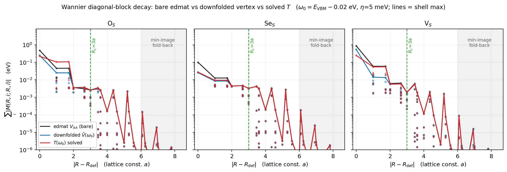
Strict on-site cut $\sum_i|M(R,i;R,i)|$ over the 22 spinor orbitals per cell $R$ (points: every cell; lines: shell maximum), for the bare edmat $V_{AA}$, the downfolded vertex $\tilde V(\omega_0)$, and the fully solved $T(\omega_0)=[1-N_k V_R\,g]^{-1}V_R$ in the real-space pair representation with the exact isolated-host $g(\Delta R)$, at $\omega_0=E_\mathrm{VBM}-0.02$ eV (home cell auto-detected at $[3,3]$ in this section's $e^{-ik\cdot R}$ convention — the same physical cell as the $[-3,-3]$ above under the opposite Fourier sign). Three observations. (i) $\Sigma$-dressing screens the on-site block: V$_\mathrm{S}$ 0.87→0.54, O$_\mathrm{S}$ 0.48→0.25, and Se$_\mathrm{S}$ 0.10→0.026 eV — the isovalent near-cancellation seen in §2, now cell-resolved. (ii) Solving the T equation pushes weight outward but never beyond the vertex support: at the 1–2$a$ shells $T$ is enhanced over $\tilde V$ by ~4× for O$_\mathrm{S}$ (0.025→0.105 eV) and V$_\mathrm{S}$ (0.014→0.055) — the shallow near-VBM resonance spreading over its Bohr radius — while V$_\mathrm{S}$'s home block is further renormalized down (0.54→0.25, strong-coupling resummation); beyond 3$a$, $T$ rides on top of the vertex tail unchanged. (iii) All three objects share the vacuum-aligned far-field plateau (~2–3 meV at 4–5$a$) and drop to $\sim1.5\times10^{-4}$ eV in the min-image fold-back region ($d>6a$, shaded) — consistent with the §3a-bis finding that the 3–4$a$ shell is real potential (cutting it moves the O$_\mathrm{S}$ resonance) while genuine image contamination is negligible. Data wdecay_diag.npz, scripts diag/wdecay_diag.py / plot_wdecay_diag.py.
5. Method and the verification chain
- Inputs: the 2026-08-20 MODE C chain (144b22 ns24 sectors; NLr 459/459/230/230, herm(A) ~5e-15) plus a w90 rerun on that chain’s own NSCF ($\Omega$=37.519 Ų, agreeing with an independent wannierization to 5 digits) — the u.mat must come from the same NSCF as the chain (gauge continuity).
- Engine: the $\omega$-resolved vertex is assembled directly in the chain’s Bloch basis (the support basis comes from a Bloch Gram matrix, avoiding an einsum rotation, ~9 s per bin; gT gate: 1.9e-11 element by element against the g8-verified Wannier einsum route); host $g_S$ on a dense 480² spectrum binned at 1.5 meV; a matched-$\eta$ Lorentzian kernel plus optical-theorem enforcement (2 rounds of row scaling, median 0.4–0.8%); and a damped IBTE with the on-shell null mode removed (spectral radius <1, direct and iterative agreeing to ~2e-4).
- Born variants: a golden-rule kernel $P=|\langle u|\tilde V|u'\rangle|^2$ with $\gamma\equiv\hbar\sum P$ ($s\equiv1$ by construction) — a consistent $O(V^2)$ definition that avoids the mixed orders of $|V+VG_0V|^2$; in the $-\Sigma$ variants the vertex is $\omega$-independent, so the continued fraction is skipped.
- Gate list: g1 chain eps≡xml (0.0); g2/g2b hr/u.mat ≤0.03 meV; gE (bit-identical, 0.0); gT 1.9e-11; g4 support residual ~1e-6; g8 support vs a full-dimension 3168² direct solve ≤6e-4 (= vertex truncation × $T$ resonance enhancement); g5 optical theorem; g6 IBTE; g7 isotropy; wdecay all LOCALIZED; and Im $T_{nn}\le0$ over the whole mesh.
6. Data and reproducibility
Banff ~/edi_tmatrix/socsup_banff/mob22/:chainmob_*.npz (12 cells, each holding 100–400 K × the NW ladder × SERTA/tr/IBTE plus $n(T)$/$E_F(T)$), wdecay_*.npz, zoomchain_*.npz (the complete $T_{nn}(k,\omega)$, complex half precision), SUMMARY.md; engine mos2_mob_chain.py / mos2_zoom_chain.py / mos2_wdecay.py / plot_zoom_chain.py. On the Anvil side, /anvil/scratch/x-rg47749/mos2mob/ is a working copy (scratch gets purged, so Banff is authoritative). Compute: Anvil shared partition, single node, 64–128 thread Python; the 12 cells + 3 zooms + wdecay came to ~30 node-hours in total.